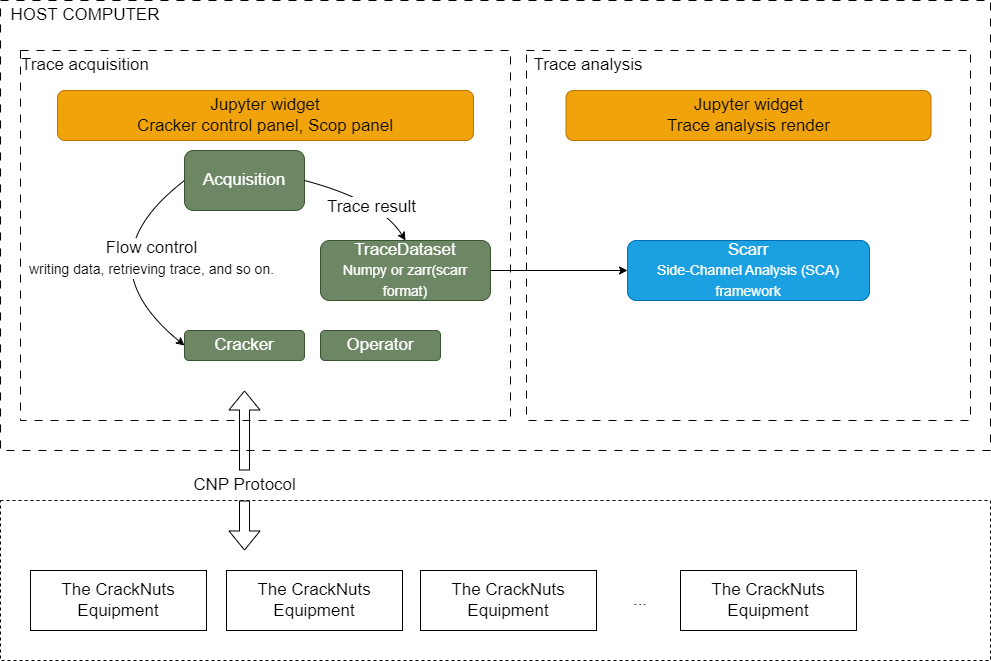

CrackNuts API 文档
CrackNuts is an integrated side-channel analysis solution that combines the collaborative work of hardware and software. The host application is developed in Python and optimized for the Jupyter environment, providing an intuitive user experience to enhance ease of use and efficiency.
本文档介绍了 CrackNuts 上位机程序的架构、功能和 API 接口，以帮助开发人员更高效地使用该程序进行侧信道分析。
CrackNuts 上位机抽象出 Cracker Acquisition 两个概念。其中 Cracker 代表 CrackNuts 中的设备，用于对设备进行配置、数据下发、数据采集等操作。Acquisition 代表在 测试 或 运行 模式下的执行流程，包括：设备配置、数据下方、数据采集等主要流程。
上位机总体架构如下图：
